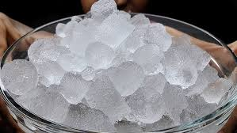

Crispy ice is the ultimate way to cool down and add a refreshing crunch to your favorite beverages. Made from nothing more than frozen water, this simple yet essential ingredient elevates everything from cocktails to iced coffees with its satisfying chill and satisfying texture. Whether you prefer classic cubes, crushed, or elegant spheres, crispy ice serves as the perfect companion for drinks of all kinds. Its pure, unadulterated form lets your beverages shine, enhancing flavors while keeping them perfectly chilled. On its own, crispy ice is a playful, crunchy treat to nibble on. Simple, versatile, and always refreshing, it’s a frosty delight that proves sometimes the best things in life are the simplest!